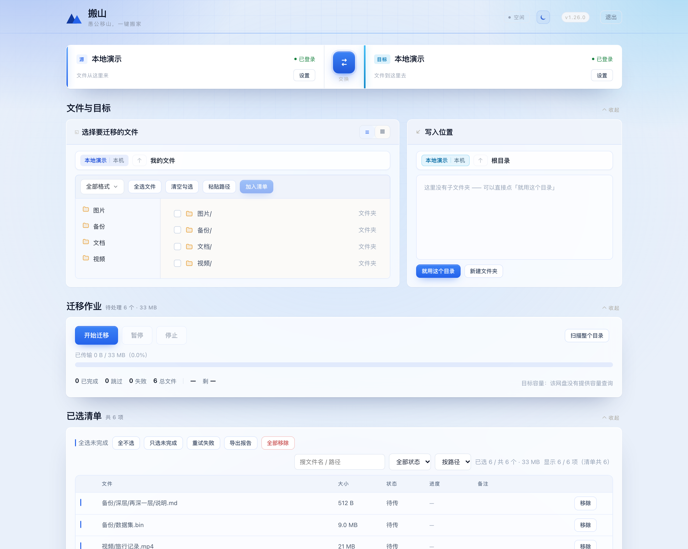

Release Note
BANSHAN
搬山
v1.26.0
网盘迁移工具
Move it. Don't lose it.
SIX CLOUDS · ONE MOUNTAIN
本机中转 · 不落整盘 · 断了能续
2026.10
Interface
一屏看全，
不用翻页。

左边挑文件，右边选去向，下面看进度 · 截图为演示数据
搬山 v1.26.0
02 / 04
What's new
这一版，
把路修
平
了。
01
六家网盘，任意方向
百度 · 阿里 · 夸克 · 天翼 · 115 · 123，两端随手换
02
断了能续，不从头再来
分片直传，进度落盘，关掉再开接着搬
03
传完自己对一遍
大小 + 首中尾抽样比对，不一致就报错
搬山 v1.26.0
03 / 04
Supported
六个网盘
一个入口。
百度网盘
BAIDU
阿里云盘
ALIYUN
夸克网盘
QUARK
天翼云盘
TIANYI
115 网盘
115
123 云盘
123PAN
macOS
Windows
源码运行
github.com/AYuanNmmmm/banshan
MIT · 凭据只留本机 · 下载在 Releases